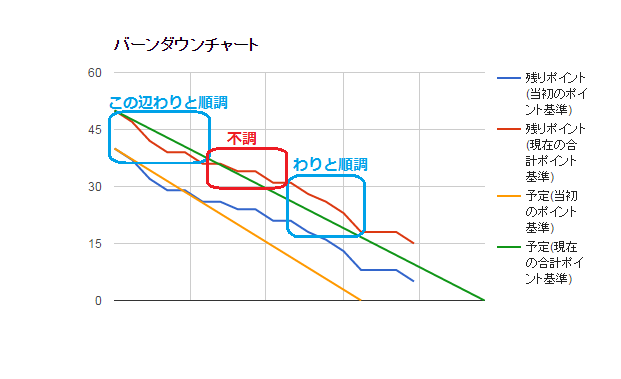

Perl とアジャイル開発
@tsucchi自己紹介
- 土田 拓也(つちだ たくや)
- @tsucchi とか blog(http://tsucchi.github.io/)とか
- シャノンという会社で、Perl とか SQL とか書いてます
-
 こんなかんじのアイコンです
こんなかんじのアイコンです -
Perlとミルキィホームズが好きです- ミルキィ好きすぎて、最近
teito.yokohama(偵都ヨコハマ)というドメインをとりました
- ミルキィ好きすぎて、最近
シャノンのアジャイル開発(チームについて)
- スクラムで開発しています
- 1週間のスプリント
- 現在僕のチーム
- 開発 x 2
- QA x 1
- プロダクトオーナー
- スクラムマスタは僕(開発)が兼任
- もっと大きなチームでやりたい気持ちもあるけど、とりあえず現状はそんな感じ
- 現在スクラムをまわしてるチームは 4つくらい
シャノンのアジャイル開発(ツールについて)
- バックログは Pivotal Tracker で管理
- プロダクトバックログ・スプリントバックログ共に
- 僕のチームはバックログを 2 つに分けている
- 1個でやってるチームもある
- バグは bugzilla で管理
- QA は bugzilla のほうが慣れてる
- Pivotal Tracker だと量が多いと埋もれてしまうことがある
アジャイル開発と Perl(1 of 3)
- ツール間連携に Perl のスクリプトを使っている
- Pivotal Tracker 間
- プロダクトバックログ -> スプリントバックログにコピー
- 今は Pivotal 本体にコピー機能ができてしまったので、あまり意味なくなってしまった...
- スプリントバックログで
- ストーリーをタスクに分ける
- 分けたタスクも1つのチケット(chore)にしている
- プロダクトバックログ -> スプリントバックログにコピー
アジャイル開発と Perl(2 of 3)
- bugzilla <-> Pivotal Tracker
- バグのチケットを bugzilla で切ったときに Pivotal で見れるようにしている
- ステータス管理は全部 bugzilla で
- bugzilla で close すると Pivotal で finish 扱いになる
- 連携方向を単方向にするため
アジャイル開発と Perl(3 of 3)
- bugzilla は XML-RPC ベースの API があるので、それを使う
- Pivotal Tracker は REST な API があるので、それを使う
Pivotal Tracker は REST な API があるので、それを使う
使う???
REST API について
- サンプルは wget とか curl とかで、実際そういうツールでもカジュアルに呼べて便利
- とはいえ、API から帰ってきたデータを弄り回すときは Perl とかでやりたい
モジュールを探してみる
なんかイマイチ...
WebService::PivotalTracker
- WebService::PivotalTracker
- 作ってみた
- REST API の薄いラッパーで、ほとんど何もしていない
- github どまり
REST API について(再)
- こういうシンプルな REST API の CPAN モジュールは意外と無かったりする
- GitHub とかも無い
- みんなどうしてるんだろ？ってちょっと気になった
おまけ(1)
- 進捗の管理について
進捗の管理について
- 色々なメトリクスを取ってみたけど、結局ベロシティを測るのが一番よい
- 色々検討したけど、やっぱりバーンダウンチャートが一番強い
バーンダウンチャート(1 of 2)

バーンダウンチャート(2 of 2)
- Google Spreadsheet にいくつかの値を入れて、グラフを書いてる
- 予定線と実績線を2つずつ入れてるのがちょっと珍しいかも
- プロジェクト開始当初と現在の予算・スケジュールでそれぞれ線を入れてる
おまけ(2)
- みんな大好き技術的負債の話
バーンダウンチャート(再)

- 順調なところは「新規で作ったところ」
- そうでない所は、「既存部分の改修」や「作ったやつを組み込むところ」
レガシーシステムのつらさが可視化されて、なんともいえない気持ちになった
まとめ
- スクラムで開発してます
- ツールはいくつか使い分けてます
- ツール間連携は Perl でやってます